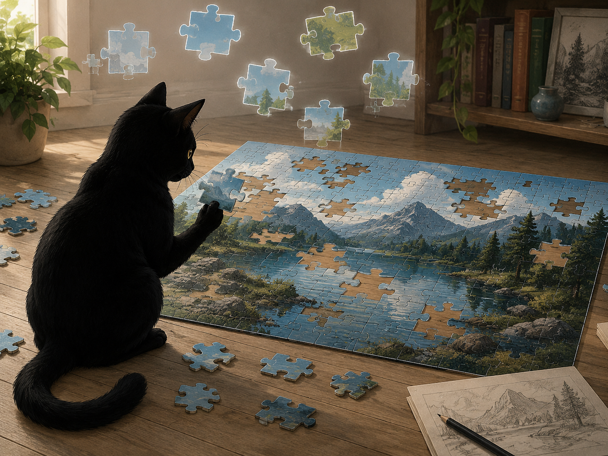
Beobachten
Die Welt zwischen den Bildern
Wie wir Wirklichkeit aus Ausschnitten zusammensetzen – und vergessen, dass Lücken bleiben.
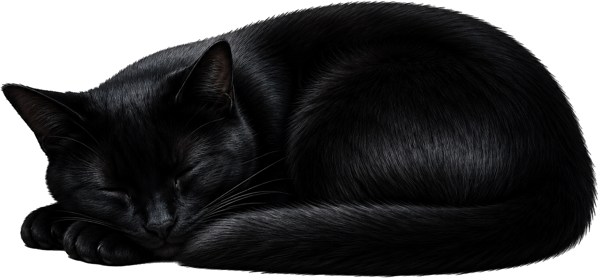
Oft sehen wir zunächst nur die Oberfläche.
Das ist kein Fehler.
Jede Reise beginnt dort.
näher tretenDie Reise beginnt
Light up Reader ordnet Texte nicht nur nach Themen, sondern nach einer Bewegung: beobachten, verstehen, Möglichkeiten erkennen, gestalten, sein.
Mappa Cognitionis
Vom vermittelten Bild führt die Reise nicht zu fertigen Antworten, sondern durch verschiedene Formen des Hinsehens. Die Stationen der Karte sind anklickbar.
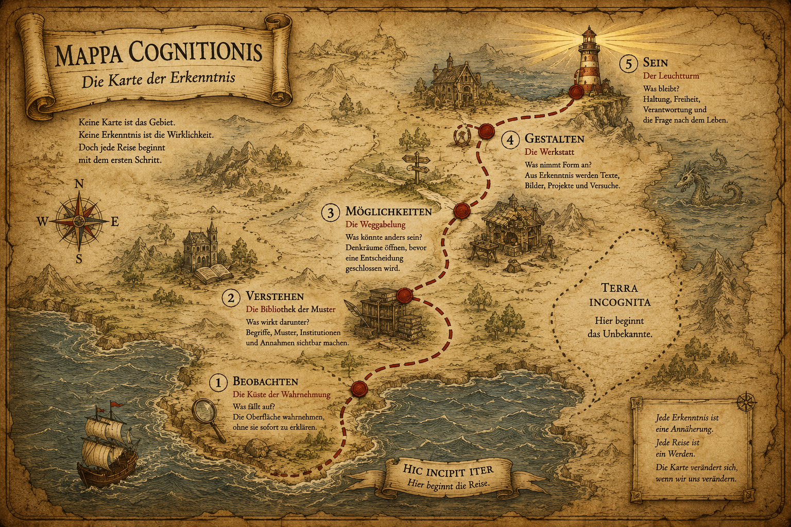
Beobachten
Was zeigt sich an der Oberfläche? Welche Ereignisse, Erfahrungen und Widersprüche fallen auf?
Verstehen
Welche Muster, Machtformen, Begriffe und Institutionen erzeugen das, was als Wirklichkeit erscheint?
Verstehen
Über die Versuchung, das eigene Urteil an Autoritäten abzugeben.
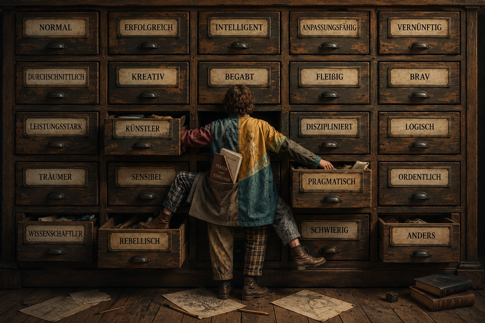
Verstehen
Wann wird Anderssein zum Makel, obwohl niemand geschädigt wird?
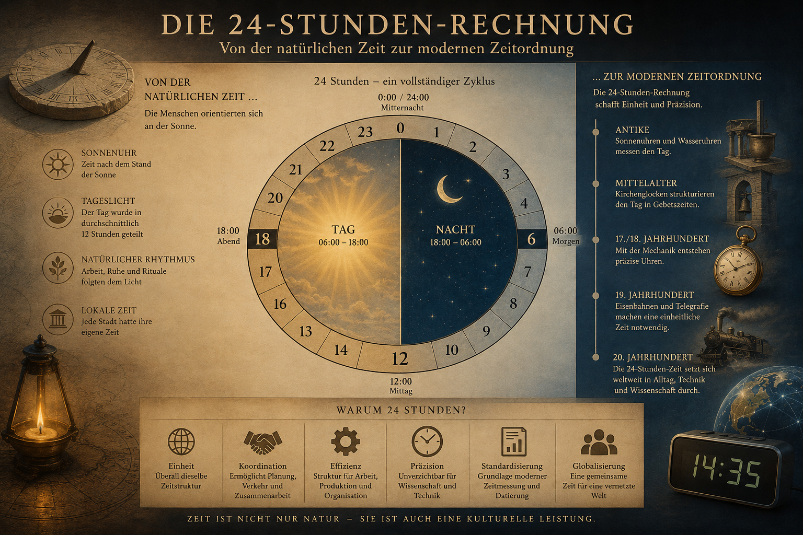
Verstehen
Haben wir ein Problem gelöst – oder nur gegen ein anderes ausgetauscht?
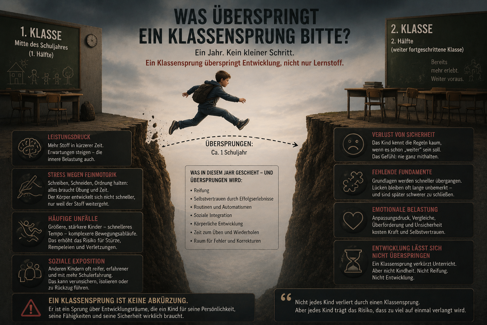
Verstehen
Ein Schuljahr besteht nicht nur aus Unterrichtsstoff.
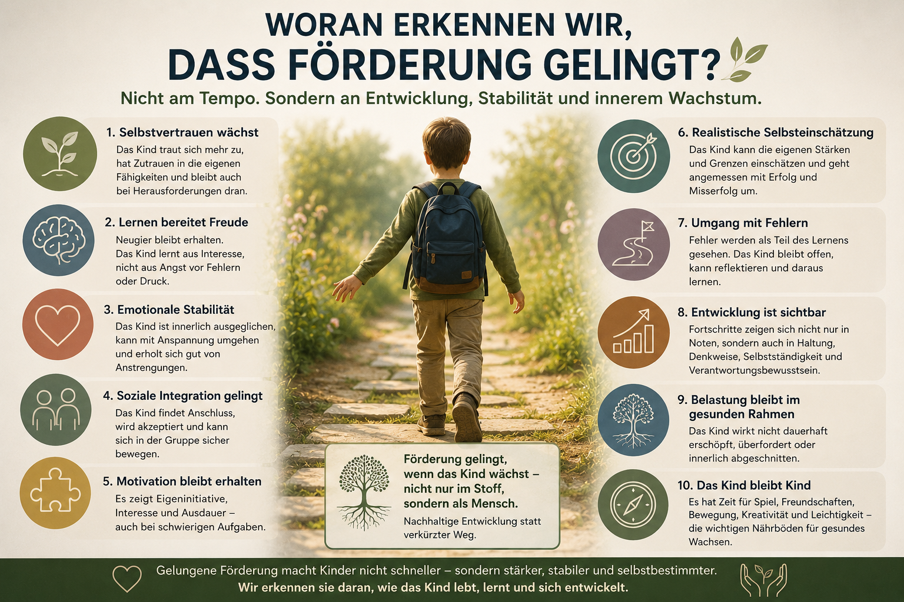
Verstehen
Warum gelungene Förderung mehr zeigen muss als Leistung.
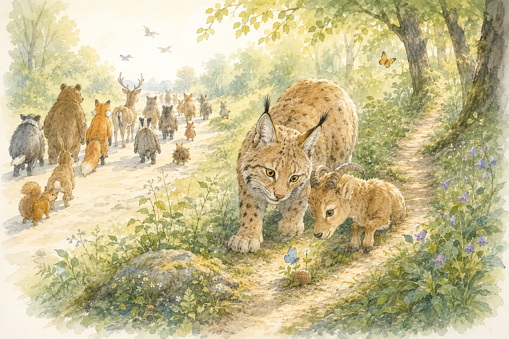
Verstehen
Warum Abweichung soziale Lesbarkeit irritiert.
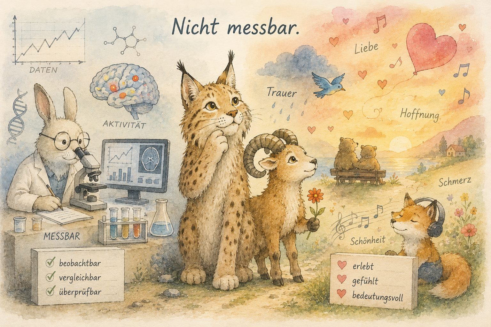
Verstehen
Über Erfahrungen, die real sind, ohne vollständig messbar zu sein.
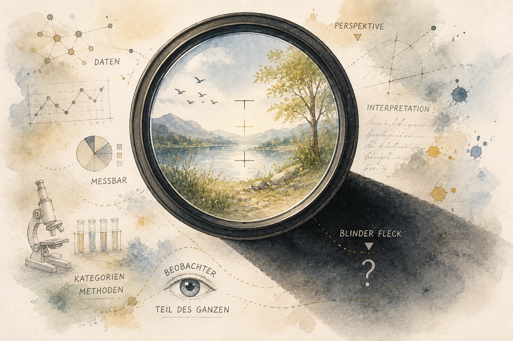
Verstehen
Warum die Reflexion der eigenen Perspektive zur Erkenntnis gehört
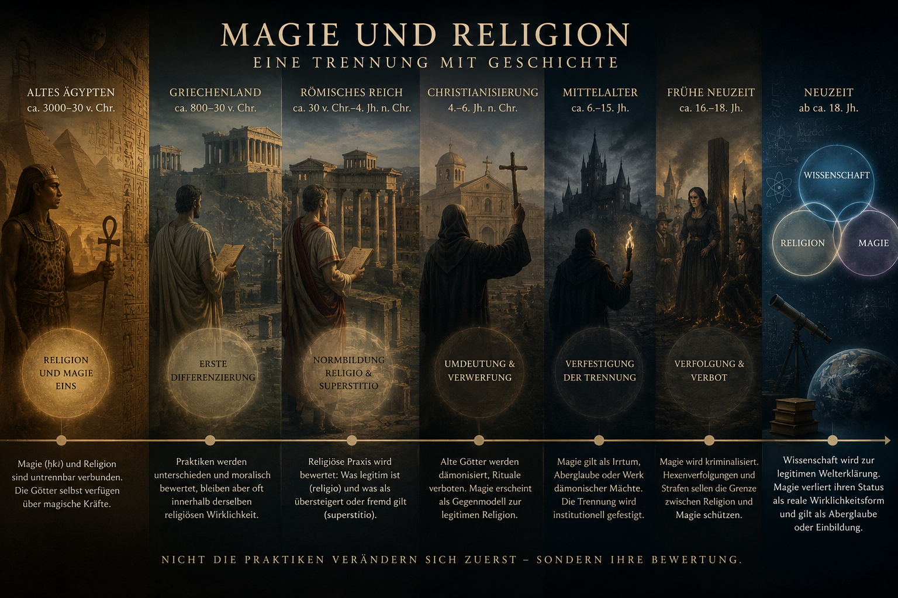
Verstehen
Wie eine historische Trennung entsteht – und wie sie verändert, was als legitim, irrational oder real gilt.
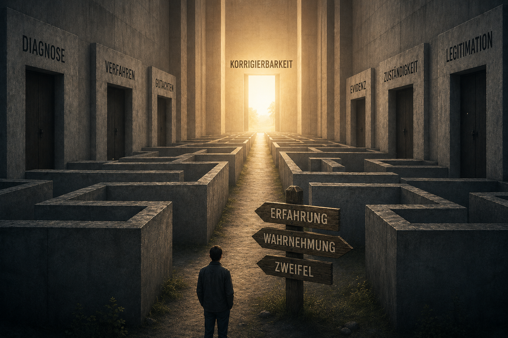
Verstehen
Über Denkraumverengung, institutionelle Hoheit und den Verlust von Autonomie
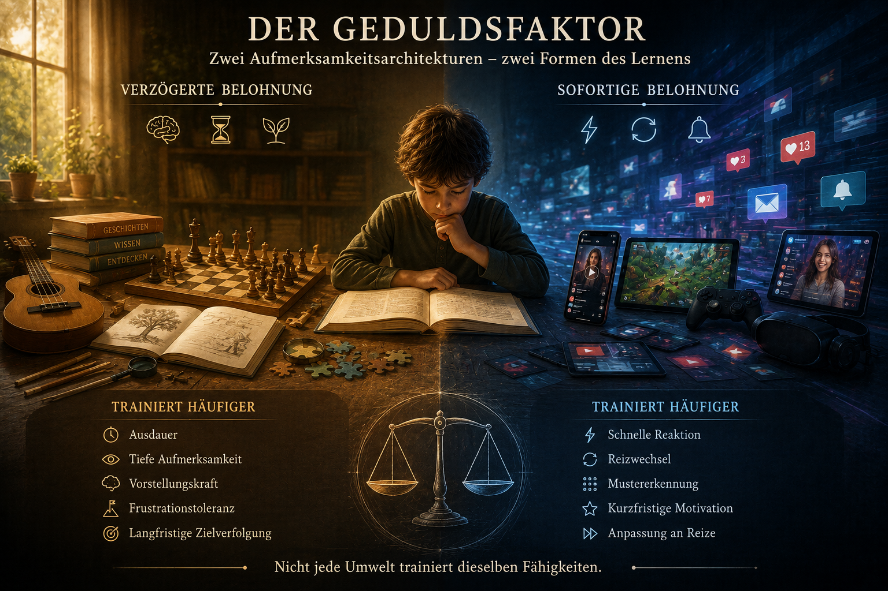
Verstehen
Wie die Aufmerksamkeitsökonomie der Zukunft den Menschen verändert
Möglichkeiten
Welche Alternativen, Gegenentwürfe und anderen Denkwege werden sichtbar, wenn man nicht an der Oberfläche stehen bleibt?

Möglichkeiten
Wie unterschiedlich dürfen Menschen sein, ohne als Defizit gelesen zu werden?

Möglichkeiten
Über Prozesse, die Zeit, Raum und Vertrauen brauchen.

Möglichkeiten
Wann schafft rechtliche Bindung Stabilität – und wann erzeugt sie neue Konflikte?

Möglichkeiten
Warum Wahrheit allein nicht entscheidet
Gestalten
Wo wird aus Verstehen eine Form, ein Projekt, ein Text, ein Bild oder ein konkreter Versuch?
Gestalten
Eine ältere Geschichte als Denkbild über Abbildungen, Zahlen und das, worauf sie zeigen.
Gestalten
Ein offener Denkraum über Hypothesen, innere Haltung und materielle Spuren.
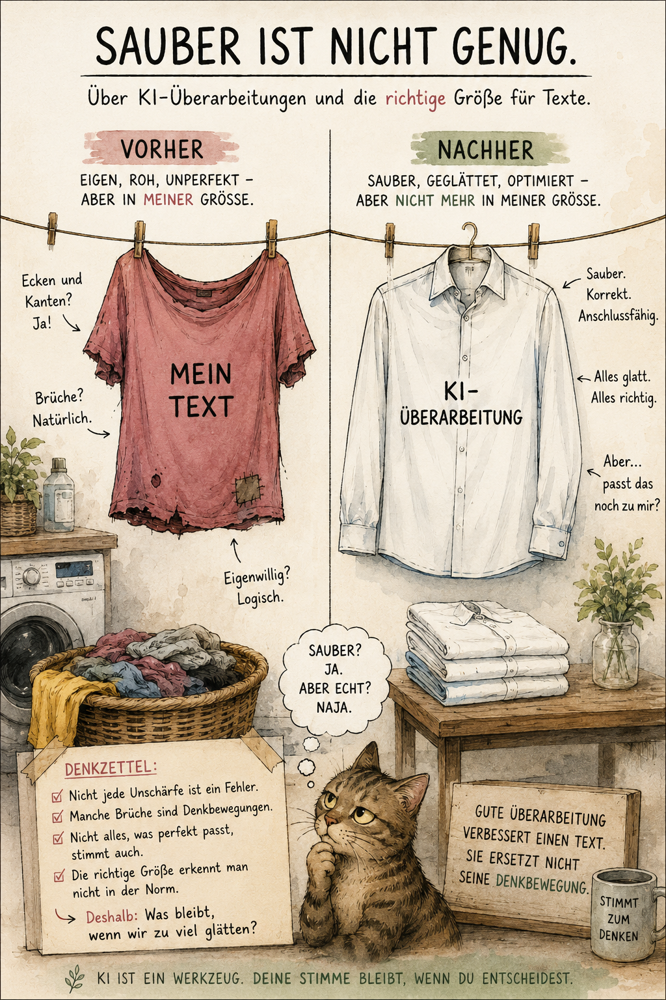
Gestalten
Was KI-Überarbeitungen über gutes Schreiben verraten
Sein
Texte, die nicht nur analysieren, sondern nach Freiheit, Natur, Menschsein, Verantwortung und Lebensfragen suchen.
Erster Tauchgang
Ein Einstieg in den Denkraum von Light up Reader: Wirklichkeit, Wahrnehmung, Institutionen, Normalität und die Frage, wie wir sehen lernen.
Oft sehen wir zunächst nur die Oberfläche.
Eine Nachricht. Eine Schlagzeile. Eine politische Debatte. Eine wissenschaftliche Theorie. Eine gesellschaftliche Norm. Eine Institution. Eine Gewohnheit.
Wir begegnen ihnen täglich und nehmen vieles davon als selbstverständlich wahr. Nicht unbedingt, weil wir alles geprüft hätten, sondern weil wir in diese Welt hineingewachsen sind. Wir lernen ihre Begriffe, ihre Kategorien und ihre Regeln oft lange bevor wir beginnen, sie zu hinterfragen.
Unter der Oberfläche beginnt der eigentliche Denkraum.
Dieser Blog ist kein Versuch, fertige Antworten zu liefern. Er ist eine Einladung zum Beobachten.
Denn vieles von dem, was wir als Wirklichkeit erleben, entsteht nicht allein aus Tatsachen. Es entsteht auch aus Wahrnehmungen, Deutungen, Erfahrungen, Sprache, kulturellen Vorstellungen und den Institutionen, die unsere Gesellschaft prägen.
Wie entsteht Normalität?
Wer entscheidet, was als vernünftig gilt?
Wer vergibt Kategorien?
Wann helfen sie uns, die Welt besser zu verstehen, und wann beginnen sie, unseren Blick zu verengen?
Warum erscheinen uns manche Dinge selbstverständlich, obwohl Menschen in anderen Zeiten oder Kulturen dieselbe Frage völlig anders beantwortet hätten?
Der historische Blick zeigt, wie sehr frühere Gesellschaften von ihren eigenen Weltbildern geprägt waren. Doch dieselbe Frage richtet sich auch an uns: Welche Annahmen halten wir für selbstverständlich, nur weil wir mit ihnen aufgewachsen sind?
Manchmal braucht es dafür die Lupe.
Die Lupe hilft uns, genauer hinzusehen. Sie macht Unterschiede sichtbar, die in der Entfernung verschwimmen. Sie zeigt uns Details, Einzelfälle und die kleinen Brüche in scheinbar einfachen Erklärungen.
Manchmal dagegen das Fernrohr.
Denn nicht alles lässt sich aus der Nähe erkennen. Manche Entwicklungen werden erst sichtbar, wenn wir Abstand gewinnen. Historische Muster, gesellschaftliche Strukturen und langfristige Veränderungen erscheinen oft erst dann, wenn wir den Blick weiten.
Zwischen Lupe und Fernrohr bewegt sich dieser Blog.
Manche Texte betrachten einen einzelnen Begriff. Andere beschäftigen sich mit Institutionen. Wieder andere mit Geschichte, Literatur, Wahrnehmung oder den Geschichten, die wir über uns selbst erzählen.
Sie alle kreisen um denselben Zusammenhang:
Wie entsteht die Wirklichkeit, die wir erleben?
Und wie erkennen wir, dass wir selbst Teil jener Wirklichkeit sind, die wir zu verstehen versuchen?
Das Leben ist eine Reise.
Nicht jede Antwort hält ein Leben lang. Nicht jede Gewissheit übersteht einen Perspektivwechsel.
Erkenntnis besteht weniger darin, endgültige Wahrheiten zu besitzen, als darin, mit offenen Augen weiterzugehen.
Willkommen beim Tauchgang.
Briefe an den Leuchtturm
Light up Reader versteht sich nicht als Sammlung fertiger Antworten.
Jeder Artikel ist eine Einladung, genauer hinzusehen, Fragen neu zu stellen und Wirklichkeit aus unterschiedlichen Perspektiven zu betrachten.
Beim Lesen sind Ihnen möglicherweise eigene Beobachtungen begegnet.
Oder Sie haben Fragen, Anregungen oder Gedanken, die den Blog bereichern könnten.
Oder es gibt Themen, denen wir künftig nachgehen sollten.
Dann freue ich mich über Ihren Eintrag im Gästebuch.
Neue Erkenntnisse entstehen selten allein.
Sie wachsen im Austausch.
Vielen Dank, dass Sie Teil dieser Reise sind.
Gästebuch
Dieses Gästebuch ist als ruhiger Ort für Beobachtungen, Fragen und neue Themen gedacht. Die Einträge erscheinen nach Prüfung als kleine Logbucheinträge auf dieser Seite.
Jede Reise beginnt mit einer ersten Beobachtung. Dieses Gästebuch ist für alle gedacht, die unterwegs etwas entdeckt haben – einen Gedanken, eine Frage oder eine neue Perspektive. Vielleicht wird daraus irgendwann ein neuer Tauchgang.
Rechtliches
Der Schutz personenbezogener Daten ist mir ein wichtiges Anliegen. Diese Website befindet sich im Aufbau. In der aktuellen Version ist sie als einfache, statische Informationsseite angelegt.
Caroline Thongsan
Postfach 11 05
26641 Westerstede
E-Mail: c.thongsan@gmail.com
Beim Besuch dieser Website können durch den Hostinganbieter automatisch technische Zugriffsdaten verarbeitet werden. Dazu können insbesondere IP-Adresse, Datum und Uhrzeit des Zugriffs, Browsertyp, Betriebssystem, Referrer-URL und aufgerufene Seiten gehören. Diese Daten dienen der technischen Bereitstellung, Stabilität und Sicherheit der Website.
Wenn Sie per E-Mail Kontakt aufnehmen, werden die von Ihnen übermittelten Daten ausschließlich zur Bearbeitung Ihrer Anfrage verwendet.
Gästebuch, Newsletter, Shop- und Empfehlungsfunktionen sind für spätere Ausbaustufen vorgesehen bzw. teilweise als Platzhalter angelegt. Sobald Eingaben, Zahlungen oder externe Dienste technisch aktiv eingebunden werden, wird diese Datenschutzerklärung vor der Freischaltung entsprechend erweitert.
Diese Website kann Links zu externen Internetseiten enthalten. Für deren Inhalte und Datenschutzpraktiken sind die jeweiligen Betreiber verantwortlich.
Im Rahmen der geltenden gesetzlichen Bestimmungen bestehen Rechte auf Auskunft, Berichtigung, Löschung, Einschränkung der Verarbeitung sowie gegebenenfalls Widerspruch gegen die Verarbeitung personenbezogener Daten.
Diese Datenschutzerklärung kann angepasst werden, wenn technische, inhaltliche oder rechtliche Änderungen dies erforderlich machen.
Rechtliches
Verantwortlich für die Inhalte:
Caroline Thongsan
Postfach 11 05
26641 Westerstede
E-Mail:
c.thongsan@gmail.com